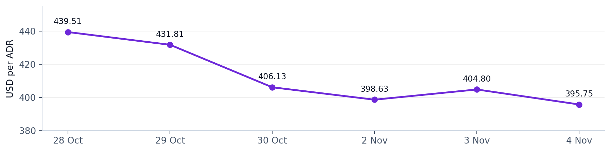
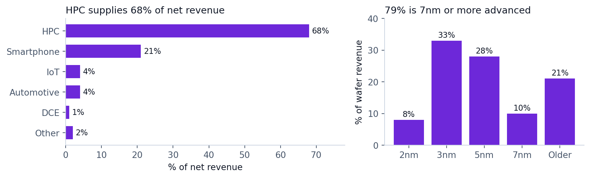
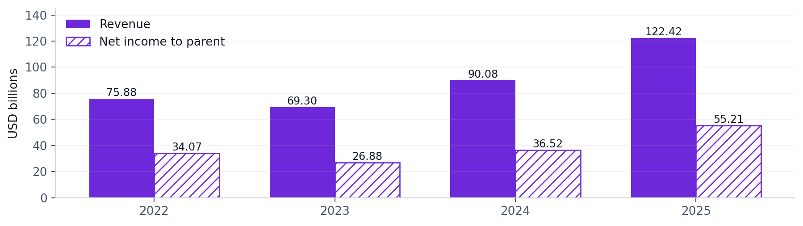
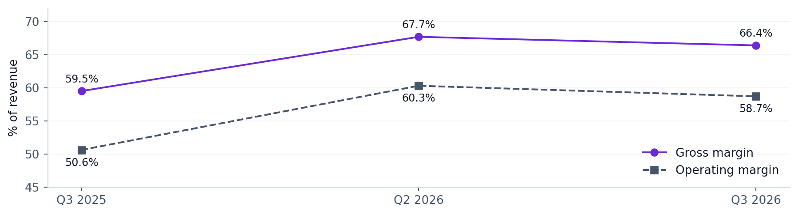
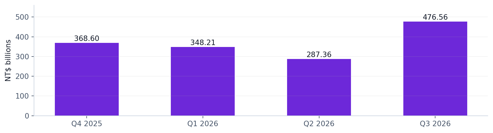
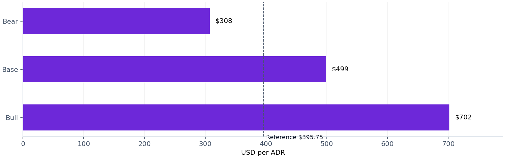

TSM | US LISTED ADR | 5 NOVEMBER 2026
Taiwan Semiconductor deep dive
A strong manufacturing franchise with rising AI concentration. TSMC gives exposure to advanced chip production across competing designers. The case is attractive if leading-edge demand and pricing continue to offset factory spending, start-up costs and geopolitical risk. This report separates company facts, Morningstar views and independent scenario analysis.
| Reference price | Evidence foundation | Research conclusion |
|---|---|---|
| US$395.75 4 Nov 2026 close [13,14] | Company filings and dated publisher links | Worth further consideration Price and cash returns matter |
Five takeaways
1. TSMC benefits from several AI chip architectures. Manufacturing leadership can capture spending even when the winning designer changes. It does not eliminate the risk that total AI investment disappoints.
2. Diversification is narrower than the customer count suggests. HPC reached 68% of Q3 revenue; the ten largest customers generated 78% of FY2025 revenue. [3,7]
3. Cash generation is strong, but reinvestment is substantial. Nine-month operating cash flow of NT$2,402.1bn less NT$1,290.0bn cash capex leaves NT$1,112.1bn FCF. [2; calculation]
4. Analyst research is a comparison tool, not a guarantee. Read dated publisher research alongside issuer filings and visible scenario assumptions. This public edition links to Morningstar instead of republishing its valuation estimates or ratings. [10,11]
5. A lower share price does not remove business risk. N2 execution, overseas-fab margins and customer spending must support the earnings assumed in any valuation.
TSM fell 10.0% from 28 Oct to 4 Nov. How to read: consecutive trading-session closes; USD/ADR; line axis is 380-455, not zero. Sources [13,14], retrieved 5 Nov 2026. Price changes exclude dividends; no cause is assigned to this move.

Educational company research. This is not personalised investment advice or a trade recommendation. Past closing prices are not executable quotes.
Exact values: historical closing prices
| US trading date, 2026 | USD per ADR |
|---|---|
| 28 Oct | 439.51 |
| 29 Oct | 431.81 |
| 30 Oct | 406.13 |
| 2 Nov | 398.63 |
| 3 Nov | 404.80 |
| 4 Nov | 395.75 |
01 BUSINESS AND REVENUE EXPOSURE
How TSMC makes money
Customers design chips; TSMC manufactures them. The pure-play foundry model earns revenue by turning customers' designs into physical semiconductors rather than marketing a competing branded chip. Process know-how, yield, scale and trusted execution are central to the proposition. [6]
| Layer | Role in plain language | Economic question |
|---|---|---|
| Chip design | Decide what the chip does | Will the customer's product win? |
| Wafer fabrication | Build transistors and circuits on wafers | Can TSMC deliver high yield at scale? |
| Advanced packaging | Connect chips and memory into a working system | Can capacity and performance meet demand? |
| Customer systems | Install chips in phones, servers and other products | Will end users justify further spending? |
Takeaway: HPC dominates revenue while leading-edge nodes dominate wafer sales. How to read: separate denominators; Q3 2026 percentages. Older nodes = 100% - 79%. Source [3], 15 Oct 2026. HPC includes more than AI; it must not be relabelled as pure AI revenue.

Winning across designers is different from diversified end demand. A shift from GPUs toward custom accelerators can still support foundry demand, but only if those designs use TSMC and total silicon spending holds up. Different customers can depend on the same hyperscaler budgets. This is an analytical inference, not disclosed customer-level revenue.
The latest mix raises the importance of AI-related returns. Smartphones remain material at 21%; IoT and automotive are 4% each. Those businesses are useful breadth, but together they are not large enough to offset every plausible HPC downturn. [3; analysis]
Concentration check: FY2025 top ten customers 78%, largest 19%, second largest 17%. The filing does not identify them in this table. Do not assign those percentages to named customers without separate evidence. [7]
Exact values: Q3 revenue exposure
| Platform / node | Revenue basis | Share |
|---|---|---|
| HPC | Net revenue | 68% |
| Smartphone | Net revenue | 21% |
| IoT | Net revenue | 4% |
| Automotive | Net revenue | 4% |
| DCE | Net revenue | 1% |
| Other | Net revenue | 2% |
| 2nm | Wafer revenue | 8% |
| 3nm | Wafer revenue | 33% |
| 5nm | Wafer revenue | 28% |
| 7nm | Wafer revenue | 10% |
| Older nodes | Wafer revenue | 21% |
02 FINANCIAL HISTORY
The AI upturn followed a real downcycle
Takeaway: revenue recovered from the 2023 contraction and accelerated through 2025. How to read: annual revenue and net income attributable to parent, US$bn; all bars start at zero. Sources [6,8]. 2026 is excluded because the full year is not yet reported.

| Metric | 2022 | 2023 | 2024 | 2025 |
|---|---|---|---|---|
| Revenue US$bn | 75.88 | 69.30 | 90.08 | 122.42 |
| Net income US$bn | 34.07 | 26.88 | 36.52 | 55.21 |
| Gross margin | 59.6% | 54.4% | 56.1% | 59.9% |
| Operating margin | 49.5% | 42.6% | 45.7% | 50.8% |
| Diluted EPS NT$/ordinary | 39.20 | 32.34 | 45.25 | 66.26 |
Sources [6,8,9]. FY2025 EPS uses the later annual report, not the preliminary presentation's NT$66.25. US$ income translations use the company's annual conventions and should not be recomputed with one current exchange rate.
Revenue growth alone is an incomplete test of quality. From 2022 to 2025, US-dollar revenue rose about 61%, but 2023 revenue fell 8.7% and net income fell about 21%. The history shows both structural growth and cyclicality. [6,8; calculations]
The recovery improved profitability as well as scale. Annual operating margin rose from 42.6% in 2023 to 50.8% in 2025. Maintaining that improvement requires utilization, yield and price to absorb depreciation and overseas costs. The next cycle may not resemble the last one. [6,8; analysis]
An investor should distinguish three kinds of growth
More wafers: higher physical volume. Better mix: more advanced, higher-value products. Pricing: more revenue per comparable service. A blended revenue-per-wafer figure mixes these effects; it is not a clean price index. This report does not label that ratio as pricing power.
03 LATEST QUARTER
Strong growth with a sequential margin decline
| Metric | Q3 2025 | Q2 2026 | Q3 2026 |
|---|---|---|---|
| Revenue US$bn | 33.10 | 40.20 | 46.72 |
| Revenue NT$bn | 989.92 | 1,270.38 | 1,494.24 |
| Gross margin | 59.5% | 67.7% | 66.4% |
| Operating margin | 50.6% | 60.3% | 58.7% |
| Net income to parent NT$bn | 452.30 | 706.56 | 763.06 |
| Diluted EPS US$/ADR | 2.92 | 4.31 | 4.60 |
| Diluted EPS NT$/ordinary | 17.44 | 27.25 | 29.43 |
Sources [1-4]; unaudited; quarter ended 30 Sep 2026. US-dollar revenue grew 41.2% year over year, versus 50.9% in NT dollars. The exchange-rate basis changes the growth figure.
Takeaway: margins are far above Q3 2025 but below Q2 2026. How to read: percentage of revenue, line axis 45%-72%; dots and squares distinguish series. Sources [3,4], 15 Oct 2026. A percentage-point change is not the same as a percentage growth rate.

Q2 had benefits that should not be assumed to recur. The management report attributes the fall in non-operating gains mainly to absent disposal and mark-to-market gains on Vanguard shares. Q2 also benefited from earthquake insurance claims in other operating income. Net income and operating margin therefore need context beyond revenue growth. [3]
What management expects next
Q4 revenue guidance is US$52.3bn-US$54.3bn, with gross margin 65%-67% and operating margin 56.5%-58.5%, assuming NT$31.8/US$. The revenue midpoint is 14.1% above Q3. Guidance is an expectation, not a reported result. [1,4; calculation]
Management's full-year US-dollar revenue growth outlook is around 44%. Separately, adding the Q4 midpoint to reported nine-month US-dollar revenue gives roughly US$176.1bn. Translation and rounding mean these are not identical calculations. [2,4]
04 CASH AND CAPITAL
Factories are profitable but expensive to expand
Takeaway: quarterly FCF remained positive and rose in Q3. How to read: operating cash flow less cash capex, NT$bn; zero-based bars. Source [3], 15 Oct 2026. This measure excludes acquisitions and does not treat all investing inflows as operating cash.

| Nine months ended 30 Sep 2026 | NT$bn | Interpretation |
|---|---|---|
| Operating cash flow | 2,402.117 | Cash generated by operations |
| Cash purchases of property and equipment | 1,289.971 | Cash capex deducted here |
| Calculated free cash flow | 1,112.146 | 28.5% of revenue |
| Common cash dividends paid | 440.853 | 39.6% of calculated FCF |
Source [2]; calculations. FCF is not net income and excludes other investing/financing flows. Nine-month FCF/net income to parent is about 54.5%. Compare matching periods and definitions.
Liquidity provides resilience, not free money. At 30 September, company-reported cash and marketable securities were NT$4,016.98bn against NT$1,031.58bn interest-bearing debt, leaving NT$2,985.40bn company-defined net cash. Committed expansion and working capital still consume resources. [3]
The spending ramp is a core valuation assumption. Management kept 2026 capex at US$60bn-US$64bn and expects 2026-2028 investment to exceed the prior three years significantly. It expects overseas fabs to dilute gross margin by about two percentage points in 2026 and three to four points over the next few years. These are management forecasts. [5]
Watch the cash after the build, not just the size of the build. A new fab can depress near-term cash and margins before earning returns. The crucial test is whether later output, pricing and utilization repay the investment at an attractive rate. Large capex is neither automatically good nor automatically bad.
Exact values: quarterly free cash flow
| Quarter | NT$ billions |
|---|---|
| Q4 2025 | 368.60 |
| Q1 2026 | 348.21 |
| Q2 2026 | 287.36 |
| Q3 2026 | 476.56 |
05 MORNINGSTAR READING FRAMEWORK
How to use Morningstar alongside the filings
Independent analyst research can test a thesis, but it does not replace the underlying evidence. The linked Morningstar public articles are useful reading alongside TSMC’s company results. This public edition does not republish Morningstar’s fair-value figures, rating values, proprietary forecasts or charts derived from those estimates. [10-12]
| Research concept | Question to ask | How to avoid misreading it |
|---|---|---|
| Fair value | What future cash generation and discount rate support the estimate? | An intrinsic-value estimate is not an executable price or guaranteed target. |
| Economic moat | Why might the business sustain competitive returns? | A strong franchise can still be bought at an unattractive price. |
| Uncertainty | How wide is the range of plausible business outcomes? | A model label is not a promise of low daily share-price volatility. |
| Capital allocation | Will reinvestment, financing and distributions create value? | Higher spending does not automatically imply higher shareholder returns. |
| Star rating | How do price, estimated value and uncertainty interact on the stated date? | Do not infer a current rating from an older article or a separate valuation model. |
A practical reading sequence
Start with the issuer, then challenge the assumptions. Establish reported revenue, profit, cash flow and capital expenditure first. Next ask which elements of the analyst thesis depend on future demand, capacity utilisation, pricing or new manufacturing processes. Finally compare those assumptions with the explicit independent scenarios in this report.
Keep dates and methods separate. The Morningstar technology article was published on 8 September 2026 with data dated 3 September. The linked earnings article is dated 16 October 2026. The historical capital-allocation discussion is dated 5 March 2025. These are different observations, not a single current research snapshot. [10-12]
The independent scenarios below are not Morningstar forecasts. Their revenue, net-margin and multiple assumptions are shown so a reader can change them. They do not reproduce the publisher’s complete valuation model or claim a current rating.
Publisher access
Read the original pages through the dated links in the source register. Access may depend on location or subscription. No subscriber report, publisher screenshot, rating table or analyst-derived valuation chart is reproduced in this public edition.
06 TRANSPARENT VALUATION
Three scenarios show what the price requires
These are independent illustrations for calendar 2027, not Morningstar forecasts. EPS = assumed revenue x assumed net margin / 5.1864bn ADR-equivalent shares. Value = EPS x assumed P/E. The share base equals 25.932bn ordinary shares divided by five, held constant for the model. [2; assumptions]
| Scenario | Revenue | Net margin | EPS / ADR | P/E | Value | Price return |
|---|---|---|---|---|---|---|
| Bear | $190bn | 42% | $15.39 | 20x | $308 | -22.2% |
| Base | $220bn | 49% | $20.79 | 24x | $499 | +26.1% |
| Bull | $250bn | 52% | $25.07 | 28x | $702 | +77.3% |
Takeaway: a broad outcome range remains despite the same manufacturing franchise. How to read: zero-based bars, US$/ADR; dashed line = 4 November close. All bars are independent calendar-2027 scenarios, not analyst forecasts. No probabilities assigned. Sources [2,13] plus stated assumptions.

Bear: US$190bn revenue and 42% net margin allow some growth versus the approximate 2026 midpoint but assume material profitability normalization and a lower 20x multiple. This is not a catastrophe case; war, prolonged shutdown or severe demand destruction could be far worse.
Base: US$220bn revenue, 49% margin and 24x earnings assume continuing growth with profitability below Q3's 51.1%. Bull: US$250bn revenue, 52% margin and 28x require strong demand, good capacity execution and a premium valuation. These assumptions are deliberately visible so they can be challenged.
The margin of safety depends on the model. A 20% discount to the illustrative base value is about US$399.1. That is near the US$395.75 historical reference, but it is not a floor, an order or a recommended entry. The base case still assumes substantial future growth.
Returns are model price/reference price - 1, excluding dividends, fees, FX costs and taxes. No separate net-cash value is added because the EPS/P/E method is an equity valuation; adding it mechanically can double count financial income.
07 VALUATION CHECKS AND RISKS
The assumptions deserve as much attention as the target
| 2027 EPS / P/E | 20x | 24x | 28x |
|---|---|---|---|
| US$16 | $320 | $384 | $448 |
| US$20 | $400 | $480 | $560 |
| US$24 | $480 | $576 | $672 |
Independent sensitivity, US$/ADR; no probabilities or consensus status. Each cell is EPS x multiple. At US$395.75, a 24x multiple requires about US$16.49 annual EPS; a 20x multiple requires US$19.79.
Annualizing the latest quarter makes the stock look less demanding than using history. Q3's US$4.60 ADR EPS x four is US$18.40, implying 21.5x at the reference price. This is a run-rate illustration, not trailing or forward P/E: it ignores seasonality, future ramp costs and non-operating items. [1,13; calculation]
| Risk | Why it matters | Evidence to watch |
|---|---|---|
| Taiwan disruption | Production, utilities and supply chains can be interrupted; losses need not resemble an ordinary cycle. | Location exposure; contingency capacity; official developments |
| AI demand and concentration | Different chip customers can depend on common cloud spending budgets. | Customer capex, order timing, utilization and HPC mix |
| Capacity and yield execution | Start-up costs can arrive before profitable output. | N2 ramp, leading-node yield, capex and gross margin |
| Overseas economics | Resilience may cost more and dilute returns. | Fab milestones and disclosed margin dilution |
| Export rules and competition | Demand can be restricted or move to alternatives. | Official rules, customer mix, competing-node execution |
| Valuation and ADR exposure | Multiple compression or FX can offset earnings growth. | Consistent currency/share basis; fees and tax treatment |
Risk framework: issuer disclosures [7], management outlook [5], and independent analysis. The 20-F identifies customer concentration, capacity forecasting, export restrictions, disasters, utility interruptions and cyber threats; no probability of geopolitical disruption is estimated here.
Multiple end markets do not make TSM a diversified conglomerate. It remains a focused manufacturing franchise. Combining it with AI hardware companies or hyperscaler exposures may offer less diversification than the different tickers suggest. This is a general risk observation, not an assessment of any individual portfolio.
08 REVIEW PLAN AND SECURITY DETAILS
What would strengthen or weaken the case
| Checkpoint | Stronger evidence | Weaker evidence |
|---|---|---|
| Demand | Sales meet guidance with sustainable orders | Repeated delays or unexplained inventory build |
| Profit quality | Operating earnings grow without one-off dependence | Net income supported chiefly by gains or subsidies |
| Investment returns | FCF stays healthy as new capacity fills | Capex rises while utilization and cash conversion fall |
| Technology | N2 ramps with manageable margin cost | Yield or schedule setbacks spread across products |
| Shareholder return | Per-ADR earnings grow with disciplined reinvestment | Share-count, FX or reinvestment drag overwhelms growth |
Confirmed upcoming information
The next scheduled operating update is October monthly sales on 10 November 2026. The calendar then lists November sales on 10 December and December sales on 8 January 2027. Dates are subject to change. Monthly sales show revenue pace, not quarterly profit or free cash flow. [15]
September revenue was NT$511.86bn, down 0.6% from August and up 54.6% year over year. Nine-month cumulative revenue rose 41.1% in NT dollars. The next release can be compared with Q4 guidance, but one month is not the entire quarter. [16]
ADR and currency discipline
One TSM ADR represents five ordinary shares. NYSE TSM trades in US dollars; Taiwan-listed 2330 is an ordinary share in New Taiwan dollars. Do not multiply the ADR price by the full ordinary share count, or compare NT-dollar ordinary EPS directly with a US-dollar ADR price. [2]
At the reference ADR price, 5.1864bn ADR-equivalent shares imply approximately US$2.052tn equity value. This is an illustrative ADR-equivalent calculation, not an official consolidated market cap: it mixes the September share count with November pricing and may differ from local-share valuation through ADR premiums and FX. [2,13; calculation]
Dividend cash received is not the declared NT-dollar dividend. Currency conversion, depositary fees, withholding and personal taxes can change the net USD payment. Investor-specific taxes and broker fees are not modeled, so no individual net yield or total-return forecast is presented.
Research conclusion
TSMC merits consideration as a long-term advanced manufacturing investment, subject to price and risk tolerance. Its financial strength and technology position support the case. The harder question is whether future capacity earns enough to justify the valuation while preserving cash returns. Independent scenario downside and Taiwan exposure prevent treating the business as a certain bargain.
09 SOURCES AND METHODS
Source register
Research cutoff: 5 November 2026. Valuation reference: 4 November 2026 US regular-session close. Company actuals run through 30 September 2026. Forward-looking statements and research views retain their own dates. All links below are external sources.
[1] TSMC Q3 2026 earnings release filed with SEC
15 Oct 2026; quarter ended 30 Sep 2026; company actuals and guidance.
[2] TSMC Q3 2026 financial statements
15 Oct 2026; unaudited statements; balance sheet, nine-month cash flow and ADR ratio.
[3] TSMC Q3 2026 management report
15 Oct 2026; platform and node mix, earnings-quality explanation, net cash and cash flows.
[4] TSMC Q3 2026 earnings presentation
15 Oct 2026; quarterly comparisons, Q4 outlook and full-year revenue guidance.
[5] TSMC Q3 2026 earnings call transcript
15 Oct 2026 event; forward-looking management commentary. Published by TSMC, transcript copyright LSEG.
[6] TSMC 2025 annual report
FY ended 31 Dec 2025; reviewed 5 Nov 2026; annual business and financial context.
[7] TSMC 2025 Form 20 F
Filed 16 Apr 2026; FY2025 customer concentration and risk factors.
[8] TSMC 2023 annual report
FY2023 and FY2022 revenue and profit history; cycle and technology context.
[9] TSMC FY2025 earnings presentation filed with SEC
15 Jan 2026; 2024-25 cash flow and capex; preliminary FY2025 EPS differs by NT$0.01 from annual report.
[10] Morningstar public TSMC earnings analysis
Phelix Lee, 16 Oct 2026; indexed public excerpts verified 5 Nov; full-page fetch unavailable.
[11] Morningstar public technology stock research
Tori Brovet, 8 Sep 2026; company ratings and price/fair value data dated 3 Sep 2026; public article read.
[12] Morningstar capital allocation analysis
Phelix Lee, 5 Mar 2025; public indexed excerpt; historical capital-allocation discussion, not a current assessment.
[13] Stock Analysis TSM historical prices
4 Nov 2026 regular-session close and six-session price series; accessed 5 Nov 2026.
[14] Yahoo Finance TSM price history
Independent cross-check: 4 Nov 2026 close US$395.75. Volumes differ between vendors and are not used.
[15] TSMC financial calendar
Checked 5 Nov 2026; October sales scheduled 10 Nov, November sales 10 Dec, December sales 8 Jan 2027.
[16] TSMC September 2026 revenue report
8 Oct 2026; September sales NT$511.86bn and nine-month cumulative revenue.
Methods and limitations
Original calculations use unrounded inputs where available and round display values. NT$bn means billions of New Taiwan dollars; US$bn means billions of US dollars. Results are TSMC-reported IFRS/TIFRS figures; FCF and company-defined net cash require the definitions stated in the report. Forecasts are not actuals. The 2027 scenarios are neither a discounted cash-flow valuation nor consensus targets.
All charts are original visualisations of cited public company facts or explicitly stated independent assumptions. Patterns, exact tables and explicit labels preserve meaning without colour. Third-party research reports and publisher screenshots are not reproduced.